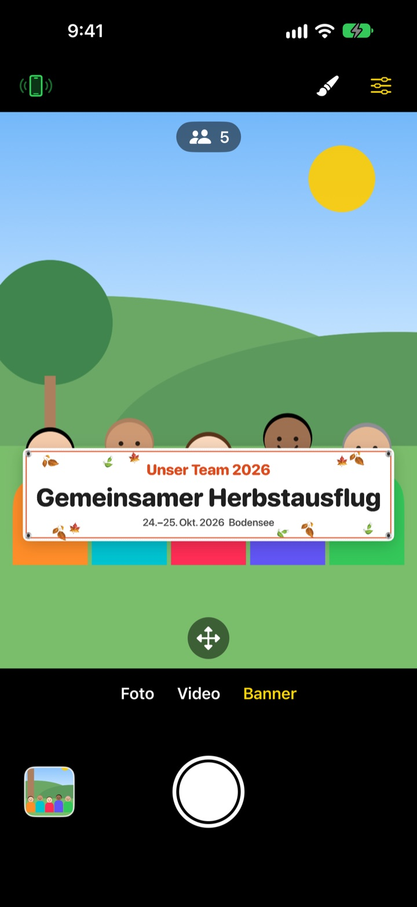
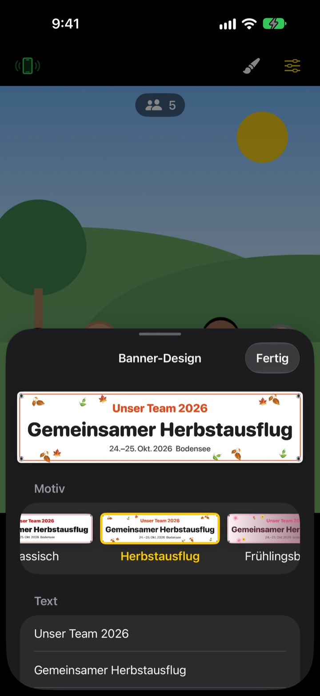

Das Gruppenfoto mit Banner.
Ohne Banner drucken.
Text schreiben, Thema wählen, und das Banner steht direkt vor deiner Gruppe. Das iPhone eines Freundes wird mit einem QR-Scan zur Fernbedienung, damit auch die Person hinter der Kamera mit aufs Bild kommt.
Alle Funktionen sind kostenlos. Ab iOS 17.

Gestalte ein Banner
Ändere den Text und tippe auf ein Thema. Drückst du den Auslöser, zählt es wie in der App drei Sekunden herunter.
Ein Banner bestellen, nur für ein Foto?
Du bestellst es, schleppst es zum Ausflug, und danach weiß keiner, wohin damit. Und weil niemand übrig ist, der das Foto macht, fehlt am Ende immer jemand. ShutterLink stellt das Banner ins Kamerabild und macht das iPhone eines Freundes zur Fernbedienung, damit alle mit Banner aufs Foto kommen.
Das passende Banner in einer Minute
Wähle aus 13 Themen wie Herbstausflug, Frühlingsblüten, Jahresabschlussfeier, Geburtstag, Sporttag, Abschluss, Hochzeit oder Firmenworkshop und schreib bis zu drei Zeilen eigenen Text.
Hintergrund, Schrift, Deko, Farben und Seitenverhältnis lassen sich ändern, und dein Logo kommt auch drauf. Wähle Stoff, Vinyl oder Papier: Ein Stoffbanner hängt durch, wirft Falten und weht im Wind wie ein echtes.

Fernbedienung ohne Installation, per QR-Code
Tippe oben links auf die Fernbedienungstaste, und ein QR-Code erscheint. Dein Freund scannt ihn mit der Kamera-App, und ShutterLink Remote öffnet sich sofort als App Clip und verbindet sich.
Im Live-Bild der Fernbedienung ist sogar das Banner zu sehen: Bild ausrichten, Auslöser drücken, fertig. Jedes Foto kommt sofort auf dem iPhone mit der Fernbedienung an, sodass auch Freunde ohne App es direkt sichern und teilen können.
In drei Schritten startklar
- 1
iPhone aufstellen
Öffne ShutterLink und stell das iPhone auf ein Stativ oder Regal.
- 2
Banner platzieren
Wähle unten Banner, leg mit dem Pinsel Text und Thema fest und tippe auf den Boden, wo die Gruppe stehen wird.
- 3
Hand heben
Heb die Handfläche oder drück den Auslöser auf der Fernbedienung. Der Timer zählt herunter und löst aus.
Gemacht für Gruppenfotos
- Handflächen-Geste · Klatsch-Auslöser
- Heb die offene Hand zur Kamera oder klatsch einmal laut, um den Timer zu starten
- Lächel-Auslöser
- Löst von selbst aus, wenn alle mit offenen Augen lächeln
- Timer 3 · 5 · 10 · 20 · 30 s
- Eine Stimme zählt herunter, der Blitz blinkt mit, und die Fernbedienung vibriert in der Hand
- Alle bitten, in die Kamera zu schauen
- Ein Tipp, und das Kamera-iPhone ruft laut, damit alle in die Linse schauen
- Serie mit 3 · 5 Fotos
- Wählt das beste Foto, auf dem alle die Augen offen haben. In der Galerie kannst du ein anderes nehmen
- Personen · Bildrand · Wasserwaage
- Zählt die Personen im Bild, warnt, wenn jemand am Rand steht, und zeigt eine Wasserwaage, wenn das iPhone schief ist
- Intervall von 3 s bis 1 min
- Halte einen Sonnenuntergang oder den Fortschritt eines Projekts in festen Abständen fest
- Kamerasteuerung
- Fokus und Belichtung per Tippen, Belichtungskorrektur, Blitz, Raster, Zoom von 0,5x bis 10x je nach Modell, Front- und Rückkamera, Video
- Einfacher Modus
- Die Fernbedienung zeigt nur einen großen Auslöser, den wirklich jeder drücken kann
- Lautstärketasten · Kamerasteuerung
- Direkt am Kamera-iPhone auslösen, ganz ohne Fernbedienung
Im Banner-Modus sind Blitz, Serienbilder, Zoom und Frontkamera nicht verfügbar. Timer, Handflächen-Auslöser und Fernbedienung funktionieren weiterhin.
Alle Funktionen sind kostenlos
Kostenlos
- Banner-Modus mit 13 Themen
- Fernbedienung ohne Installation (App Clip)
- Auslösen per Handfläche, Klatschen und Lächeln, dazu Timer
- Bestes Foto, Personenzählung und Wasserwaage
- Video und Intervallaufnahmen
Trinkgeld geben (freiwillig)
- In den Einstellungen ein kleines, mittleres oder großes Trinkgeld senden
- Trinkgeld schaltet nichts frei und sperrt nichts
Kein Abo. Du zahlst einmal, nur wenn du Trinkgeld gibst.
Keine Werbung, kein Konto.
Häufige Fragen
Was brauche ich?
Installiere ShutterLink auf dem iPhone, das fotografiert (ab iOS 17). Auf dem iPhone mit der Fernbedienung muss nichts installiert werden, es braucht nur beim ersten Öffnen des App Clips einmal Internet. Lass Bluetooth auf beiden an und die Geräte nah beieinander, meist innerhalb von 10 m.
Ich scanne den QR-Code, aber der App Clip öffnet sich nicht.
Prüfe, ob das iPhone mit der Fernbedienung online ist. Du kannst auch den vierstelligen Code des Kamera-iPhones in ShutterLink Remote eingeben und auf Verbinden tippen. Sieh außerdem nach, ob App Clips unter Einstellungen › Bildschirmzeit › Beschränkungen blockiert sind.
Es hängt bei „Suche nach Kamera …“.
ShutterLink muss auf dem Kamera-iPhone geöffnet und auf dem Bildschirm sein. Prüfe auf beiden iPhones unter Einstellungen › Bluetooth, ob Bluetooth an ist. Der Code ändert sich bei jedem Öffnen der App. Hast du sie neu geöffnet, nutze den neuen QR-Code oder Code und tippe auf Erneut versuchen.
Ich sehe „Bluetooth-Zugriff verweigert“.
Aktiviere ShutterLink unter Einstellungen › Datenschutz & Sicherheit › Bluetooth. Die Fernbedienung ist ein App Clip und steht dort eventuell nicht in der Liste. Scanne dann den QR-Code erneut und tippe bei der Abfrage auf Erlauben.
Das Live-Bild ruckelt oder ist unscharf.
Das Live-Bild wird absichtlich verkleinert, damit es über Bluetooth passt. Fotos und Videos werden in voller Qualität des Kamera-iPhones gespeichert. Wände, Menschen oder viel Abstand können zu Rucklern führen, Auslöser und alle anderen Funktionen arbeiten aber weiter.
Wo landen meine Fotos?
In Fotos auf dem Kamera-iPhone und in der Galerie der App. Die Fernbedienung bekommt auch eine Kopie, speichert sie aber nicht von selbst. Sichere oder teile sie also, bevor du die Fernbedienung schließt. Kommt in Fotos nichts an, erlaube ShutterLink unter Einstellungen › Datenschutz & Sicherheit › Fotos.
Meine Videos haben keinen Ton.
Aktiviere ShutterLink unter Einstellungen › Datenschutz & Sicherheit › Mikrofon.
Kann ich mehrere Fernbedienungen verbinden?
Ja. Mehrere iPhones können sich gleichzeitig mit demselben QR-Code oder Code verbinden, und jedes davon löst dieselbe Kamera aus.
Die Verbindung bricht beim Fotografieren ab.
Solange ShutterLink geöffnet ist, bleibt der Bildschirm an. Sperrst du das iPhone mit der Seitentaste oder wechselst die App, bricht die Verbindung ab. Lass die App beim Fotografieren also im Vordergrund.
Werden meine Fotos irgendwo hochgeladen?
Nein. Die beiden iPhones verbinden sich direkt per Bluetooth, und Fotos und Videos bleiben nur auf dem Kamera-iPhone und der verbundenen Fernbedienung. Das klappt auch in den Bergen oder am Strand ohne Netz, und ein Konto brauchst du nicht.
Noch nicht gelöst oder einen Fehler gefunden? Schreib an leeo@kakao.com. Gib die Modelle und iOS-Versionen beider iPhones an, dann geht es schneller.